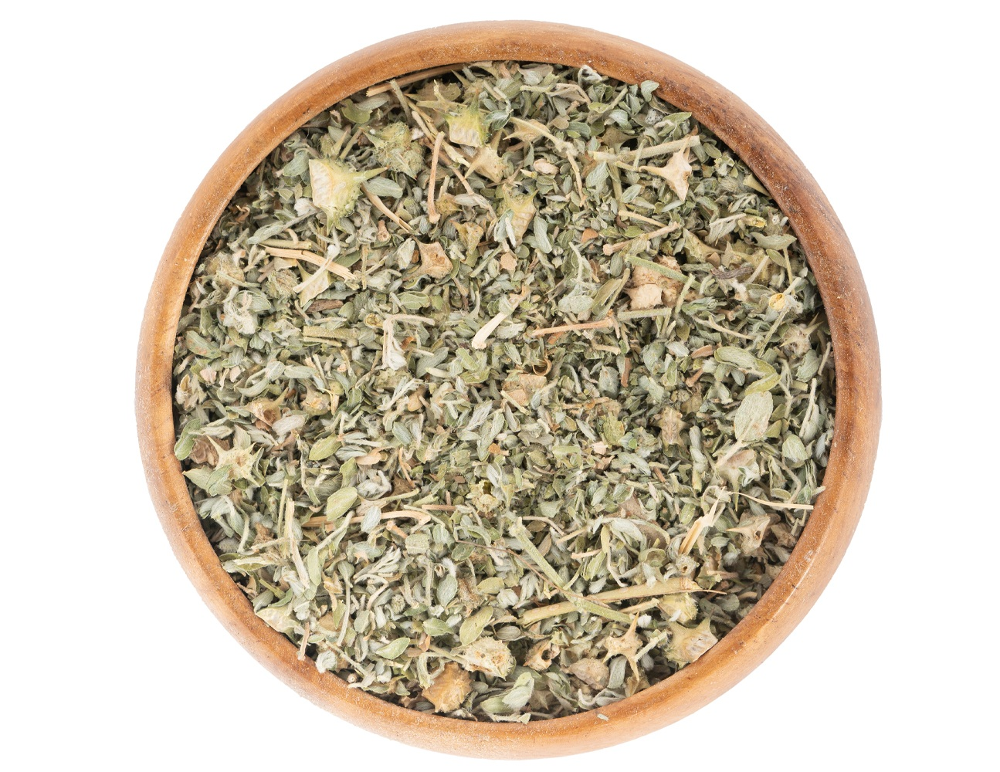

50 qr - 10 AZN
🌿 Çoban Çökərtən (Tribulus)
Çoban çökərtən xalq təbabətində xüsusilə sidik-cinsiyyət sistemi, hormonal balans və ümumi bədən gücləndirici təsiri ilə tanınan qiymətli bitkidir.
🌸 Sidikqovucu Xüsusiyyətləri
- Böyrəklərin fəaliyyətini dəstəkləyərək artıq mayeni xaric edir.
- Ödemlərin azalmasında və böyrək yollarının təmizlənməsində faydalıdır.
- Sidik yollarında iltihab riskini minimuma endirir.
🩺 Fiziki Güc və Enerji
- Testosteron səviyyəsini təbii yolla dəstəkləyir.
- Halsızlıq və enerji çatışmazlığı zamanı bədəni canlandırır.
- İdman edənlər üçün əzələ bərpasını sürətləndirir.
🌿 İstifadə Qaydası
1 çay qaşığı bitkini 200 ml qaynar suda 10-15 dəqiqə dəmləyin. Gündə 1-2 dəfə yeməkdən sonra ilıq halda içilməsi tövsiyə olunur.
⚠️ Diqqət
- Hamilə və süd verən qadınlara tövsiyə edilmir.
- Mədə xorası olanlar həkimlə məsləhətləşməlidir.
 Instagram: @derman_bitkileri
Instagram: @derman_bitkileri